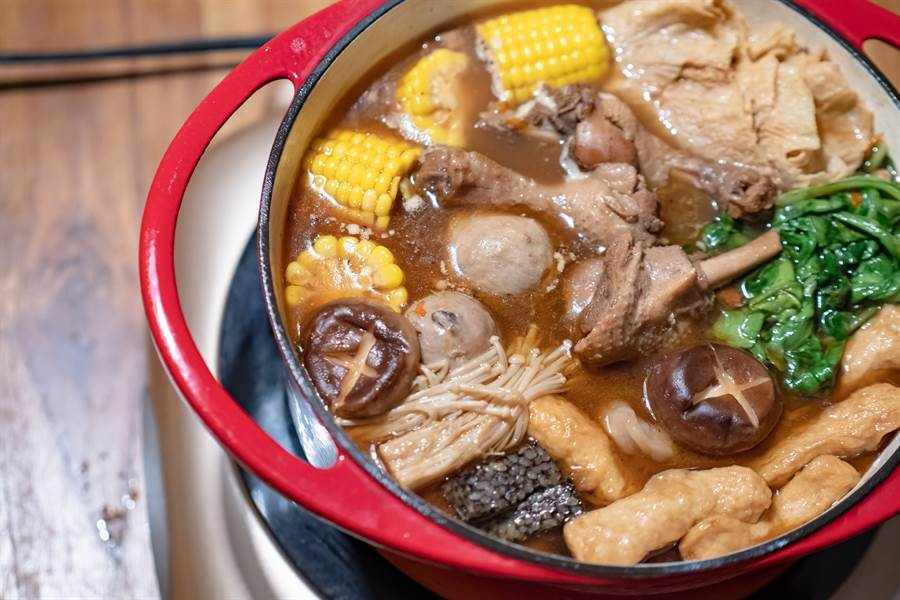

吃薑母鴨時，除了會點上幾樣喜歡的配料，滑滑順順的「麻油麵線」也幾乎成為每桌必點。
不過近日就有網友好奇，「為什麼薑母鴨就只有麵線，卻沒遇過賣白飯的？」文章一出掀起網友熱議，更有老饕點出店家「不能說的秘密」。
原PO在「爆系知識家」PO文，表示每次吃薑母鴨雖然會點一大堆配料，但主食卻只有麵線能選擇，讓他感到很納悶，「為什麼薑母鴨就只有麵線，
卻沒遇過有賣白飯的？難道大家去火鍋店就單純吃料嗎？白飯才有飽足感啊！如果薑母鴨也有白飯供應反而會讓人更常選擇去消費，而不是偶爾去消費一次。」
PO文曝光後，許多網友也表示自己跟原PO有一樣疑問，「每次吃薑母鴨都好想吃飯喔」、「我也很希望有白飯！薑母鴨配白飯我可以吃好幾碗」
、「我也常在想 比起麵線我比較愛吃飯」、「真的！每次吃完薑母鴨都好空虛」。對此，就有饕客點出店家不賣白飯的關鍵原因，「讓你一下就吃飽，他要賺什麼配菜的錢！」
網友分析，因為白飯利潤低，店家還要事前洗米煮飯，且一次要煮一大鍋，「浪費人力還會有剩飯的問題」；反觀麵線，
只要在客人點單後丟下去煮，快速又方便，最重要的是「一點點麵線賣你30比較賺」、「麵線一盤賣30～60客人不會生氣，白飯一碗30～60你會買嗎？」
此外，網友也說，店家的策略就是故意要讓客人「吃不飽」，「吃菜吃肉還會加點，配白飯，原鍋加點菜就飽了」、
「白飯一碗下去一下就飽了，吃那麼飽誰還要加料」、「老闆就是不希望你有飽足感才會多點幾道啊」，一語點破了店家不能說的秘密。
